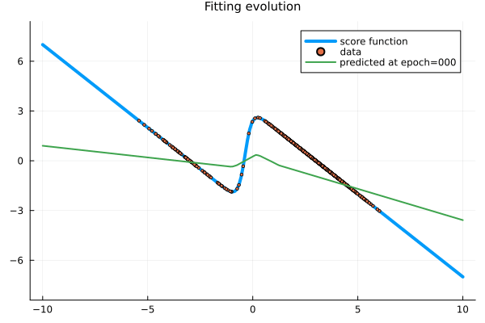
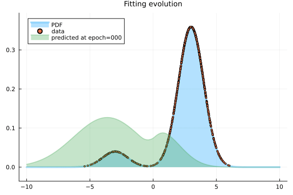

Finite-difference score-matching of a one-dimensional Gaussian mixture model
Introduction
Aim
The aim, this time, is to fit a neural network via finite-difference score matching, following the pioneering work of Aapo Hyvärinen (2005) about score-matching, combined with the work of Pang, Xu, Li, Song, Ermon, and Zhu (2020), which uses finite differences to efficiently approximate the gradient in the loss function proposed by Aapo Hyvärinen (2005), and the idea of 1. Song and Ermon (2019) of modeling directly the score function instead of the pdf or an energy potential of the pdf.
Background
Generative score-matching diffusion methods use Langevin dynamics to draw samples from a modeled score function. It rests on the idea of Aapo Hyvärinen (2005) that one can directly fit the score function, from the sample data, using a suitable loss function (associated with the Fisher divergence) not depending on the unknown score function of the random variable. This is obtained by a simple integration by parts on the expected square distance between the model score function and the actual score function. The integration by parts separates the dependence on the actual score function from the parameters of the model, so the fitting process (minimization over the parameters of the model) does not depend on the unknown score function.
The obtained loss function, however, depends on the gradient of the model, which is computationally expensive. Pang, Xu, Li, Song, Ermon, and Zhu (2020) proposed to use finite differences to approximate the derivative of the model to significantly reduce the computational cost of training the model.
The differentiation for the optimization is with respect to the parameters, while the differentiation of the modeled score function is on the variate, but still this is a great computational challenge and not all AD are fit for that. For this reason, we resort to centered finite differences to approximate the derivative of the modeled score function.
For a python version of a similar pedagogical example, see Eric J. Ma (2021). There, they use AD on top of AD, via the google/jax library, which apparently handles this double-AD not so badly.
Take away
We'll see that, in this simple example at least, we don't need a large or deep neural network. It is much more important to have enough sample points to capture the transition region in the mixture of Gaussians.
The finite-difference implicit score matching method
The score-matching method from Aapo Hyvärinen (2005) rests on the following ideas:
1. Fit the model by minimizing the expected square distance between the model score function $\psi(x; {\boldsymbol{\theta}})$ and the score function $\psi_X(x)$ of the random variable $X$, via the explicit score matching (ESM) objective
\[ J_{\mathrm{ESM}}({\boldsymbol{\theta}}) = \frac{1}{2}\int_{\mathbb{R}^d} p_{\mathbf{X}}(\mathbf{x}) \left\|\boldsymbol{\psi}(\mathbf{x}; {\boldsymbol{\theta}}) - \boldsymbol{\psi}_{\mathbf{X}}(\mathbf{x})\right\|^2\;\mathrm{d}\mathbf{x}.\]
2. Use integration by parts in the expectation to write that
\[ J_{\mathrm{ESM}}({\boldsymbol{\theta}}) = J_{\mathrm{ISM}}({\boldsymbol{\theta}}) + C,\]
where $C$ is constant with respect to the parameters, so we only need to minimize the implicit score matching (ISM) objective ${\tilde J}_{\mathrm{ISM}}$, given by
\[ J_{\mathrm{ISM}}({\boldsymbol{\theta}}) = \int_{\mathbb{R}} p_{\mathbf{X}}(\mathbf{x}) \left( \frac{1}{2}\left\|\boldsymbol{\psi}(\mathbf{x}; {\boldsymbol{\theta}})\right\|^2 + \boldsymbol{\nabla}_{\mathbf{x}} \cdot \boldsymbol{\psi}(\mathbf{x}; {\boldsymbol{\theta}}) \right)\;\mathrm{d}\mathbf{x},\]
which does not involve the unknown score function of ${\mathbf{X}}$. It does, however, involve the gradient of the modeled score function, which is expensive to compute.
3. In practice, the implicit score-matching loss function, which depends on the unknown $p_\mathbf{X}(\mathbf{x})$, is estimated via the empirical distribution, obtained from the sample data $(\mathbf{x}_n)_n$. Thus, we minimize the empirical implicit score matching objective
\[ {\tilde J}_{\mathrm{ISM}{\tilde p}_0} = \frac{1}{N}\sum_{n=1}^N \left( \frac{1}{2}\|\boldsymbol{\psi}(\mathbf{x}_n; {\boldsymbol{\theta}})\|^2 + \boldsymbol{\nabla}_{\mathbf{x}} \cdot \boldsymbol{\psi}(\mathbf{x}_n; {\boldsymbol{\theta}}) \right).\]
where the empirical distribution is given by ${\tilde p}_0 = (1/N)\sum_{n=1}^N \delta_{\mathbf{x}_n}.$
On top of that, we add one more step.
4. As mentioned before, computing a derivative to form the loss function becomes expensive when combined with the usual optimization methods to fit a neural network, as they require the gradient of the loss function itself, i.e. the optimization process involves the gradient of the gradient of something. Because of that, one alternative is to approximate the derivative of the model score function by centered finite differences, i.e.
\[ \frac{\partial}{\partial x} \psi(x_n; {\boldsymbol{\theta}}) \approx \frac{\psi(x_n + \delta; {\boldsymbol{\theta}}) - \psi(x_n - \delta; {\boldsymbol{\theta}})}{2\delta},\]
for a suitably small $\delta > 0$.
In this case, since we need compute $\psi(x_n + \delta; {\boldsymbol{\theta}})$ and $\psi(x_n - \delta; {\boldsymbol{\theta}})$, we avoid computing also $\psi(x_n; {\boldsymbol{\theta}})$ and approximate it with the average
\[ \psi(x_n; {\boldsymbol{\theta}}) \approx \frac{\psi(x_n + \delta; {\boldsymbol{\theta}}) + \psi(x_n - \delta; {\boldsymbol{\theta}})}{2}.\]
Hence, we approximate the implicit score matching ${\tilde J}_{\mathrm{ISM}{\tilde p}_0}$ by the finite-difference (implicit) score matching
\[ {\tilde J}_{\mathrm{FDSM}}({\boldsymbol{\theta}}) = \int_{\mathbb{R}} p_X(x) \Bigg( \frac{1}{2}\left(\frac{\psi(x + \delta; {\boldsymbol{\theta}}) + \psi(x - \delta; {\boldsymbol{\theta}})}{2}\right)^2 + \frac{\psi(x + \delta; {\boldsymbol{\theta}}) - \psi(x - \delta; {\boldsymbol{\theta}})}{2\delta} \Bigg)\;\mathrm{d}x,\]
And the empirical implicit score matching ${\tilde J}_{\mathrm{ISM}{\tilde p}_0}$ is approximated by
\[ {\tilde J}_{\mathrm{FDSM}{\tilde p}_0} = \frac{1}{N}\sum_{n=1}^N \Bigg( \frac{1}{2}\left(\frac{\psi(x + \delta; {\boldsymbol{\theta}}) + \psi(x - \delta; {\boldsymbol{\theta}})}{2}\right)^2 + \frac{\psi(x + \delta; {\boldsymbol{\theta}}) - \psi(x - \delta; {\boldsymbol{\theta}})}{2\delta} \Bigg).\]
Numerical example
We illustrate the above method by fitting a neural network to a univariate Gaussian mixture distribution.
We played with different target distributions and settled here with a bimodal distribution used in Eric J. Ma (2021).
Julia language setup
We use the Julia programming language with suitable packages.
Packages
using StatsPlots
using Random
using Distributions
using Lux # artificial neural networks explicitly parametrized
using Optimisers
using Zygote # automatic differentiationReproducibility
We set the random seed for reproducibility purposes.
rng = Xoshiro(12345)Code introspection
We do not attempt to overly optimize the code here since this is a simple one-dimensional problem. Nevertheless, it is always healthy to check the type stability of the critical parts (like the loss functions) with @code_warntype. One should also check for any unusual time and allocation with BenchmarkTools.@btime or BenchmarkTools.@benchmark. We performed these analysis and everything seems good. We found it unnecessary to clutter the notebook with their outputs here, though.
Data
We build the target model and draw samples from it. We need enough sample points to capture the transition region in the mixture of Gaussians.
xrange = range(-10, 10, 200)
dx = Float64(xrange.step)
x = permutedims(collect(xrange))
target_prob = MixtureModel([Normal(-3, 1), Normal(3, 1)], [0.1, 0.9])
target_pdf = pdf.(target_prob, x)
target_score = gradlogpdf.(target_prob, x)
y = target_score # just to simplify the notation
sample_points = permutedims(rand(rng, target_prob, 1024))
data = (x, y, target_pdf, sample_points)([-10.0 -9.899497487437186 … 9.899497487437186 10.0], [7.0 6.899497487437186 … -6.899497487437186 -7.0], [9.134720408364594e-13 1.8366893783972853e-12 … 1.6530204405575567e-11 8.221248367528135e-12], [2.303077959422043 2.8428423932782843 … 3.1410080972036334 2.488464630750972])Notice the data x and sample_points are defined as row vectors so we can apply the model in batch to all of their values at once. The values y are also row vectors for easy comparison with the predicted values. When, plotting, though, we need to revert them to vectors.
Visualizing the sample data drawn from the distribution and the PDF.
plot(title="PDF and histogram of sample data from the distribution", titlefont=10)
histogram!(sample_points', normalize=:pdf, nbins=80, label="sample histogram")
plot!(x', target_pdf', linewidth=4, label="pdf")
scatter!(sample_points', s -> pdf(target_prob, s), linewidth=4, label="sample")Visualizing the score function.
plot(title="The score function and the sample", titlefont=10)
plot!(x', target_score', label="score function", markersize=2)
scatter!(sample_points', s -> gradlogpdf(target_prob, s), label="data", markersize=2)
The neural network model
The neural network we consider is a simple feed-forward neural network made of a single hidden layer, obtained as a chain of a couple of dense layers. This is implemented with the LuxDL/Lux.jl package.
We will see, again, that we don't need a big neural network in this simple example. We go as low as it works.
model = Chain(Dense(1 => 8, relu), Dense(8 => 1))Chain(
layer_1 = Dense(1 => 8, relu), # 16 parameters
layer_2 = Dense(8 => 1), # 9 parameters
) # Total: 25 parameters,
# plus 0 states.The LuxDL/Lux.jl package uses explicit parameters, that are initialized (or obtained) with the Lux.setup function, giving us the parameters and the state of the model.
ps, st = Lux.setup(rng, model) # initialize and get the parameters and states of the model((layer_1 = (weight = Float32[-0.003556765; -1.8715183; … ; 0.66702616; -0.9373461;;], bias = Float32[0.18317068, 0.5787344, -0.18110967, 0.9307035, -0.43067825, -0.46645045, -0.8246051, -0.9340805]), layer_2 = (weight = Float32[0.27326134 -0.2086962 … 0.42855448 0.5658726], bias = Float32[0.09530755])), (layer_1 = NamedTuple(), layer_2 = NamedTuple()))Explicit score matching loss function $J_{\mathrm{ESM}}({\boldsymbol{\theta}})$
For educational purposes, since we have the pdf and the score function, one of the ways we may train the model is directly with $J_{\mathrm{ESM}}({\boldsymbol{\theta}})$. This is also useful to make sure that our network is able to model the desired score function.
Here is how we implement it.
function loss_function_esm(model, ps, st, data)
x, y, target_pdf, sample_points = data
y_pred, st = Lux.apply(model, x, ps, st)
loss = mean(target_pdf .* (y_pred .- y) .^2)
return loss, st, ()
endloss_function_esm (generic function with 1 method)Plain square error loss function
Still for educational purposes, we modify $J_{\mathrm{ESM}}({\boldsymbol{\theta}})$ for training, without weighting on the distribution of the random variable itself, as in $J_{\mathrm{ESM}}({\boldsymbol{\theta}})$. This has the benefit of giving more weight to the transition region. Here is how we implement it.
function loss_function_esm_plain(model, ps, st, data)
x, y, target_pdf, sample_points = data
y_pred, st = Lux.apply(model, x, ps, st)
loss = mean(abs2, y_pred .- y)
return loss, st, ()
endloss_function_esm_plain (generic function with 1 method)Finite-difference score matching ${\tilde J}_{\mathrm{FDSM}}$
Again, for educational purposes, we may implement ${\tilde J}_{\mathrm{FDSM}}({\boldsymbol{\theta}})$, as follows.
function loss_function_FDSM(model, ps, st, data)
x, y, target_pdf, sample_points = data
xmin, xmax = extrema(x)
delta = (xmax - xmin) / 2length(x)
y_pred_fwd, = Lux.apply(model, x .+ delta, ps, st)
y_pred_bwd, = Lux.apply(model, x .- delta, ps, st)
y_pred = ( y_pred_bwd .+ y_pred_fwd ) ./ 2
dy_pred = (y_pred_fwd .- y_pred_bwd ) ./ 2delta
loss = mean(target_pdf .* (dy_pred + y_pred .^ 2 / 2))
return loss, st, ()
endloss_function_FDSM (generic function with 1 method)Empirical finite-difference score matching loss function ${\tilde J}_{\mathrm{FDSM}{\tilde p}_0}$
In practice we would use the sample data, not the supposedly unknown score function and PDF themselves. Here would be one implementation using finite differences, along with Monte-Carlo.
function loss_function_FDSM_over_sample(model, ps, st, data)
x, y, target_pdf, sample_points = data
xmin, xmax = extrema(sample_points)
delta = (xmax - xmin) / 2length(sample_points)
y_pred_fwd, = Lux.apply(model, sample_points .+ delta, ps, st)
y_pred_bwd, = Lux.apply(model, sample_points .- delta, ps, st)
y_pred = ( y_pred_bwd .+ y_pred_fwd ) ./ 2
dy_pred = (y_pred_fwd .- y_pred_bwd ) ./ 2delta
loss = mean(dy_pred + y_pred .^ 2 / 2)
return loss, st, ()
endloss_function_FDSM_over_sample (generic function with 1 method)Optimization setup
Optimization method
We use the classical Adam optimiser (see Kingma and Ba (2015)), which is a stochastic gradient-based optimization method.
opt = Adam(0.03)
tstate_org = Lux.Training.TrainState(model, ps, st, opt)TrainState(
Chain(
layer_1 = Dense(1 => 8, relu), # 16 parameters
layer_2 = Dense(8 => 1), # 9 parameters
),
number of parameters: 25
number of states: 0
optimizer: Optimisers.Adam(eta=0.03, beta=(0.9, 0.999), epsilon=1.0e-8)
step: 0
)
Automatic differentiation in the optimization
As mentioned, we setup differentiation in LuxDL/Lux.jl with the FluxML/Zygote.jl library, which is currently the only one implemented (there are pre-defined methods for AutoForwardDiff(), AutoReverseDiff(), AutoFiniteDifferences(), etc., but not implemented yet).
vjp_rule = Lux.Training.AutoZygote()ADTypes.AutoZygote()Processor
We use the CPU instead of the GPU.
dev_cpu = cpu_device()
## dev_gpu = gpu_device()(::MLDataDevices.CPUDevice{Missing}) (generic function with 1 method)Check differentiation
Check if Zygote via Lux is working fine to differentiate the loss functions for training.
Lux.Training.compute_gradients(vjp_rule, loss_function_esm, data, tstate_org)((layer_1 = (weight = Float32[-0.050562456; -0.0022956962; … ; -0.08161155; 0.006370581;;], bias = Float32[-0.023082083, 0.00034197676, -0.0100809485, -0.020624125, 0.029695434, 0.0067583956, -0.03278248, -0.00071924547]), layer_2 = (weight = Float32[-0.014814105 -0.021535374 … -0.063946225 -0.00936537], bias = Float32[-0.08446889])), 0.05891430321572992, (), Lux.Training.TrainState{Nothing, Nothing, Lux.Chain{@NamedTuple{layer_1::Lux.Dense{typeof(NNlib.relu), Int64, Int64, Nothing, Nothing, Static.True}, layer_2::Lux.Dense{typeof(identity), Int64, Int64, Nothing, Nothing, Static.True}}, Nothing}, @NamedTuple{layer_1::@NamedTuple{weight::Matrix{Float32}, bias::Vector{Float32}}, layer_2::@NamedTuple{weight::Matrix{Float32}, bias::Vector{Float32}}}, @NamedTuple{layer_1::@NamedTuple{}, layer_2::@NamedTuple{}}, Optimisers.Adam{Float64, Tuple{Float64, Float64}, Float64}, @NamedTuple{layer_1::@NamedTuple{weight::Optimisers.Leaf{Optimisers.Adam{Float64, Tuple{Float64, Float64}, Float64}, Tuple{Matrix{Float32}, Matrix{Float32}, Tuple{Float32, Float32}}}, bias::Optimisers.Leaf{Optimisers.Adam{Float64, Tuple{Float64, Float64}, Float64}, Tuple{Vector{Float32}, Vector{Float32}, Tuple{Float32, Float32}}}}, layer_2::@NamedTuple{weight::Optimisers.Leaf{Optimisers.Adam{Float64, Tuple{Float64, Float64}, Float64}, Tuple{Matrix{Float32}, Matrix{Float32}, Tuple{Float32, Float32}}}, bias::Optimisers.Leaf{Optimisers.Adam{Float64, Tuple{Float64, Float64}, Float64}, Tuple{Vector{Float32}, Vector{Float32}, Tuple{Float32, Float32}}}}}}(nothing, nothing, Lux.Chain{@NamedTuple{layer_1::Lux.Dense{typeof(NNlib.relu), Int64, Int64, Nothing, Nothing, Static.True}, layer_2::Lux.Dense{typeof(identity), Int64, Int64, Nothing, Nothing, Static.True}}, Nothing}((layer_1 = Dense(1 => 8, relu), layer_2 = Dense(8 => 1)), nothing), (layer_1 = (weight = Float32[-0.003556765; -1.8715183; … ; 0.66702616; -0.9373461;;], bias = Float32[0.18317068, 0.5787344, -0.18110967, 0.9307035, -0.43067825, -0.46645045, -0.8246051, -0.9340805]), layer_2 = (weight = Float32[0.27326134 -0.2086962 … 0.42855448 0.5658726], bias = Float32[0.09530755])), (layer_1 = NamedTuple(), layer_2 = NamedTuple()), Optimisers.Adam(eta=0.03, beta=(0.9, 0.999), epsilon=1.0e-8), (layer_1 = (weight = Leaf(Adam(eta=0.03, beta=(0.9, 0.999), epsilon=1.0e-8), (Float32[0.0; 0.0; … ; 0.0; 0.0;;], Float32[0.0; 0.0; … ; 0.0; 0.0;;], (0.9, 0.999))), bias = Leaf(Adam(eta=0.03, beta=(0.9, 0.999), epsilon=1.0e-8), (Float32[0.0, 0.0, 0.0, 0.0, 0.0, 0.0, 0.0, 0.0], Float32[0.0, 0.0, 0.0, 0.0, 0.0, 0.0, 0.0, 0.0], (0.9, 0.999)))), layer_2 = (weight = Leaf(Adam(eta=0.03, beta=(0.9, 0.999), epsilon=1.0e-8), (Float32[0.0 0.0 … 0.0 0.0], Float32[0.0 0.0 … 0.0 0.0], (0.9, 0.999))), bias = Leaf(Adam(eta=0.03, beta=(0.9, 0.999), epsilon=1.0e-8), (Float32[0.0], Float32[0.0], (0.9, 0.999))))), 0))Lux.Training.compute_gradients(vjp_rule, loss_function_esm_plain, data, tstate_org)((layer_1 = (weight = Float32[6.3705935; -3.428723; … ; 3.0130339; 9.327687;;], bias = Float32[-0.45501328, 0.43466827, 0.045152973, 0.08273475, -0.13300705, -0.0490374, 0.26342168, -1.1487464]), layer_2 = (weight = Float32[-0.38792095 -31.953028 … 4.1827903 -13.554729], bias = Float32[-1.6651213])), 6.2528048955176025, (), Lux.Training.TrainState{Nothing, Nothing, Lux.Chain{@NamedTuple{layer_1::Lux.Dense{typeof(NNlib.relu), Int64, Int64, Nothing, Nothing, Static.True}, layer_2::Lux.Dense{typeof(identity), Int64, Int64, Nothing, Nothing, Static.True}}, Nothing}, @NamedTuple{layer_1::@NamedTuple{weight::Matrix{Float32}, bias::Vector{Float32}}, layer_2::@NamedTuple{weight::Matrix{Float32}, bias::Vector{Float32}}}, @NamedTuple{layer_1::@NamedTuple{}, layer_2::@NamedTuple{}}, Optimisers.Adam{Float64, Tuple{Float64, Float64}, Float64}, @NamedTuple{layer_1::@NamedTuple{weight::Optimisers.Leaf{Optimisers.Adam{Float64, Tuple{Float64, Float64}, Float64}, Tuple{Matrix{Float32}, Matrix{Float32}, Tuple{Float32, Float32}}}, bias::Optimisers.Leaf{Optimisers.Adam{Float64, Tuple{Float64, Float64}, Float64}, Tuple{Vector{Float32}, Vector{Float32}, Tuple{Float32, Float32}}}}, layer_2::@NamedTuple{weight::Optimisers.Leaf{Optimisers.Adam{Float64, Tuple{Float64, Float64}, Float64}, Tuple{Matrix{Float32}, Matrix{Float32}, Tuple{Float32, Float32}}}, bias::Optimisers.Leaf{Optimisers.Adam{Float64, Tuple{Float64, Float64}, Float64}, Tuple{Vector{Float32}, Vector{Float32}, Tuple{Float32, Float32}}}}}}(nothing, nothing, Lux.Chain{@NamedTuple{layer_1::Lux.Dense{typeof(NNlib.relu), Int64, Int64, Nothing, Nothing, Static.True}, layer_2::Lux.Dense{typeof(identity), Int64, Int64, Nothing, Nothing, Static.True}}, Nothing}((layer_1 = Dense(1 => 8, relu), layer_2 = Dense(8 => 1)), nothing), (layer_1 = (weight = Float32[-0.003556765; -1.8715183; … ; 0.66702616; -0.9373461;;], bias = Float32[0.18317068, 0.5787344, -0.18110967, 0.9307035, -0.43067825, -0.46645045, -0.8246051, -0.9340805]), layer_2 = (weight = Float32[0.27326134 -0.2086962 … 0.42855448 0.5658726], bias = Float32[0.09530755])), (layer_1 = NamedTuple(), layer_2 = NamedTuple()), Optimisers.Adam(eta=0.03, beta=(0.9, 0.999), epsilon=1.0e-8), (layer_1 = (weight = Leaf(Adam(eta=0.03, beta=(0.9, 0.999), epsilon=1.0e-8), (Float32[0.0; 0.0; … ; 0.0; 0.0;;], Float32[0.0; 0.0; … ; 0.0; 0.0;;], (0.9, 0.999))), bias = Leaf(Adam(eta=0.03, beta=(0.9, 0.999), epsilon=1.0e-8), (Float32[0.0, 0.0, 0.0, 0.0, 0.0, 0.0, 0.0, 0.0], Float32[0.0, 0.0, 0.0, 0.0, 0.0, 0.0, 0.0, 0.0], (0.9, 0.999)))), layer_2 = (weight = Leaf(Adam(eta=0.03, beta=(0.9, 0.999), epsilon=1.0e-8), (Float32[0.0 0.0 … 0.0 0.0], Float32[0.0 0.0 … 0.0 0.0], (0.9, 0.999))), bias = Leaf(Adam(eta=0.03, beta=(0.9, 0.999), epsilon=1.0e-8), (Float32[0.0], Float32[0.0], (0.9, 0.999))))), 0))Lux.Training.compute_gradients(vjp_rule, loss_function_FDSM, data, tstate_org)((layer_1 = (weight = Float32[-0.025280774; -0.0011436436; … ; -0.040590584; 0.0031747743;;], bias = Float32[-0.011540726, 0.00018402562, -0.005043756, -0.010314912, 0.0148344785, 0.0033988245, -0.01621516, -0.00034894608]), layer_2 = (weight = Float32[-0.007406853 -0.010766149 … -0.031977117 -0.0046828836], bias = Float32[-0.042233348])), 0.00510874380657287, (), Lux.Training.TrainState{Nothing, Nothing, Lux.Chain{@NamedTuple{layer_1::Lux.Dense{typeof(NNlib.relu), Int64, Int64, Nothing, Nothing, Static.True}, layer_2::Lux.Dense{typeof(identity), Int64, Int64, Nothing, Nothing, Static.True}}, Nothing}, @NamedTuple{layer_1::@NamedTuple{weight::Matrix{Float32}, bias::Vector{Float32}}, layer_2::@NamedTuple{weight::Matrix{Float32}, bias::Vector{Float32}}}, @NamedTuple{layer_1::@NamedTuple{}, layer_2::@NamedTuple{}}, Optimisers.Adam{Float64, Tuple{Float64, Float64}, Float64}, @NamedTuple{layer_1::@NamedTuple{weight::Optimisers.Leaf{Optimisers.Adam{Float64, Tuple{Float64, Float64}, Float64}, Tuple{Matrix{Float32}, Matrix{Float32}, Tuple{Float32, Float32}}}, bias::Optimisers.Leaf{Optimisers.Adam{Float64, Tuple{Float64, Float64}, Float64}, Tuple{Vector{Float32}, Vector{Float32}, Tuple{Float32, Float32}}}}, layer_2::@NamedTuple{weight::Optimisers.Leaf{Optimisers.Adam{Float64, Tuple{Float64, Float64}, Float64}, Tuple{Matrix{Float32}, Matrix{Float32}, Tuple{Float32, Float32}}}, bias::Optimisers.Leaf{Optimisers.Adam{Float64, Tuple{Float64, Float64}, Float64}, Tuple{Vector{Float32}, Vector{Float32}, Tuple{Float32, Float32}}}}}}(nothing, nothing, Lux.Chain{@NamedTuple{layer_1::Lux.Dense{typeof(NNlib.relu), Int64, Int64, Nothing, Nothing, Static.True}, layer_2::Lux.Dense{typeof(identity), Int64, Int64, Nothing, Nothing, Static.True}}, Nothing}((layer_1 = Dense(1 => 8, relu), layer_2 = Dense(8 => 1)), nothing), (layer_1 = (weight = Float32[-0.003556765; -1.8715183; … ; 0.66702616; -0.9373461;;], bias = Float32[0.18317068, 0.5787344, -0.18110967, 0.9307035, -0.43067825, -0.46645045, -0.8246051, -0.9340805]), layer_2 = (weight = Float32[0.27326134 -0.2086962 … 0.42855448 0.5658726], bias = Float32[0.09530755])), (layer_1 = NamedTuple(), layer_2 = NamedTuple()), Optimisers.Adam(eta=0.03, beta=(0.9, 0.999), epsilon=1.0e-8), (layer_1 = (weight = Leaf(Adam(eta=0.03, beta=(0.9, 0.999), epsilon=1.0e-8), (Float32[0.0; 0.0; … ; 0.0; 0.0;;], Float32[0.0; 0.0; … ; 0.0; 0.0;;], (0.9, 0.999))), bias = Leaf(Adam(eta=0.03, beta=(0.9, 0.999), epsilon=1.0e-8), (Float32[0.0, 0.0, 0.0, 0.0, 0.0, 0.0, 0.0, 0.0], Float32[0.0, 0.0, 0.0, 0.0, 0.0, 0.0, 0.0, 0.0], (0.9, 0.999)))), layer_2 = (weight = Leaf(Adam(eta=0.03, beta=(0.9, 0.999), epsilon=1.0e-8), (Float32[0.0 0.0 … 0.0 0.0], Float32[0.0 0.0 … 0.0 0.0], (0.9, 0.999))), bias = Leaf(Adam(eta=0.03, beta=(0.9, 0.999), epsilon=1.0e-8), (Float32[0.0], Float32[0.0], (0.9, 0.999))))), 0))Lux.Training.compute_gradients(vjp_rule, loss_function_FDSM_over_sample, data, tstate_org)((layer_1 = (weight = Float32[-0.527771; -0.021055222; … ; -0.8834152; 0.052393913;;], bias = Float32[-0.23545456, 0.0011318922, -0.10370636, -0.21179199, 0.30560684, 0.06583691, -0.3659439, -0.0032877922]), layer_2 = (weight = Float32[-0.15095806 -0.19195557 … -0.6708679 -0.08135986], bias = Float32[-0.86164093])), 0.11494219313979222, (), Lux.Training.TrainState{Nothing, Nothing, Lux.Chain{@NamedTuple{layer_1::Lux.Dense{typeof(NNlib.relu), Int64, Int64, Nothing, Nothing, Static.True}, layer_2::Lux.Dense{typeof(identity), Int64, Int64, Nothing, Nothing, Static.True}}, Nothing}, @NamedTuple{layer_1::@NamedTuple{weight::Matrix{Float32}, bias::Vector{Float32}}, layer_2::@NamedTuple{weight::Matrix{Float32}, bias::Vector{Float32}}}, @NamedTuple{layer_1::@NamedTuple{}, layer_2::@NamedTuple{}}, Optimisers.Adam{Float64, Tuple{Float64, Float64}, Float64}, @NamedTuple{layer_1::@NamedTuple{weight::Optimisers.Leaf{Optimisers.Adam{Float64, Tuple{Float64, Float64}, Float64}, Tuple{Matrix{Float32}, Matrix{Float32}, Tuple{Float32, Float32}}}, bias::Optimisers.Leaf{Optimisers.Adam{Float64, Tuple{Float64, Float64}, Float64}, Tuple{Vector{Float32}, Vector{Float32}, Tuple{Float32, Float32}}}}, layer_2::@NamedTuple{weight::Optimisers.Leaf{Optimisers.Adam{Float64, Tuple{Float64, Float64}, Float64}, Tuple{Matrix{Float32}, Matrix{Float32}, Tuple{Float32, Float32}}}, bias::Optimisers.Leaf{Optimisers.Adam{Float64, Tuple{Float64, Float64}, Float64}, Tuple{Vector{Float32}, Vector{Float32}, Tuple{Float32, Float32}}}}}}(nothing, nothing, Lux.Chain{@NamedTuple{layer_1::Lux.Dense{typeof(NNlib.relu), Int64, Int64, Nothing, Nothing, Static.True}, layer_2::Lux.Dense{typeof(identity), Int64, Int64, Nothing, Nothing, Static.True}}, Nothing}((layer_1 = Dense(1 => 8, relu), layer_2 = Dense(8 => 1)), nothing), (layer_1 = (weight = Float32[-0.003556765; -1.8715183; … ; 0.66702616; -0.9373461;;], bias = Float32[0.18317068, 0.5787344, -0.18110967, 0.9307035, -0.43067825, -0.46645045, -0.8246051, -0.9340805]), layer_2 = (weight = Float32[0.27326134 -0.2086962 … 0.42855448 0.5658726], bias = Float32[0.09530755])), (layer_1 = NamedTuple(), layer_2 = NamedTuple()), Optimisers.Adam(eta=0.03, beta=(0.9, 0.999), epsilon=1.0e-8), (layer_1 = (weight = Leaf(Adam(eta=0.03, beta=(0.9, 0.999), epsilon=1.0e-8), (Float32[0.0; 0.0; … ; 0.0; 0.0;;], Float32[0.0; 0.0; … ; 0.0; 0.0;;], (0.9, 0.999))), bias = Leaf(Adam(eta=0.03, beta=(0.9, 0.999), epsilon=1.0e-8), (Float32[0.0, 0.0, 0.0, 0.0, 0.0, 0.0, 0.0, 0.0], Float32[0.0, 0.0, 0.0, 0.0, 0.0, 0.0, 0.0, 0.0], (0.9, 0.999)))), layer_2 = (weight = Leaf(Adam(eta=0.03, beta=(0.9, 0.999), epsilon=1.0e-8), (Float32[0.0 0.0 … 0.0 0.0], Float32[0.0 0.0 … 0.0 0.0], (0.9, 0.999))), bias = Leaf(Adam(eta=0.03, beta=(0.9, 0.999), epsilon=1.0e-8), (Float32[0.0], Float32[0.0], (0.9, 0.999))))), 0))Training loop
Here is the typical main training loop suggest in the LuxDL/Lux.jl tutorials, but sligthly modified to save the history of losses per iteration.
function train(tstate, vjp, data, loss_function, epochs, numshowepochs=20, numsavestates=0)
losses = zeros(epochs)
tstates = [(0, tstate)]
for epoch in 1:epochs
grads, loss, stats, tstate = Lux.Training.compute_gradients(vjp,
loss_function, data, tstate)
if ( epochs ≥ numshowepochs > 0 ) && rem(epoch, div(epochs, numshowepochs)) == 0
println("Epoch: $(epoch) || Loss: $(loss)")
end
if ( epochs ≥ numsavestates > 0 ) && rem(epoch, div(epochs, numsavestates)) == 0
push!(tstates, (epoch, tstate))
end
losses[epoch] = loss
tstate = Lux.Training.apply_gradients(tstate, grads)
end
return tstate, losses, tstates
endtrain (generic function with 3 methods)Training
Training with $J_{\mathrm{ESM}}({\boldsymbol{\theta}})$
Now we attempt to train the model, starting with $J_{\mathrm{ESM}}({\boldsymbol{\theta}})$.
@time tstate, losses, tstates = train(tstate_org, vjp_rule, data, loss_function_esm, 500, 20, 125)┌ Warning: Mixed-Precision `matmul_cpu_fallback!` detected and Octavian.jl cannot be used for this set of inputs (C [Matrix{Float64}]: A [Matrix{Float32}] x B [Matrix{Float64}]). Falling back to generic implementation. This may be slow.
└ @ LuxLib.Impl ~/.julia/packages/LuxLib/R8Czx/src/impl/matmul.jl:190
Epoch: 25 || Loss: 0.011484647476584184
Epoch: 50 || Loss: 0.0010892008543654456
Epoch: 75 || Loss: 0.0005139587301049121
Epoch: 100 || Loss: 0.0003048078681800926
Epoch: 125 || Loss: 0.00022010774832755456
Epoch: 150 || Loss: 0.00016877845539167637
Epoch: 175 || Loss: 0.00013389781166276758
Epoch: 200 || Loss: 0.00010710671033748542
Epoch: 225 || Loss: 8.837107175303617e-5
Epoch: 250 || Loss: 7.325462539288798e-5
Epoch: 275 || Loss: 6.075454121212702e-5
Epoch: 300 || Loss: 6.519539827046248e-5
Epoch: 325 || Loss: 5.080965209395447e-5
Epoch: 350 || Loss: 4.499543672433463e-5
Epoch: 375 || Loss: 4.107296801645077e-5
Epoch: 400 || Loss: 3.753088421206525e-5
Epoch: 425 || Loss: 3.427673849087842e-5
Epoch: 450 || Loss: 3.128626629962772e-5
Epoch: 475 || Loss: 2.856143813023042e-5
Epoch: 500 || Loss: 2.6069196946524126e-5
2.262455 seconds (6.99 M allocations: 375.074 MiB, 2.74% gc time, 97.20% compilation time)Testing out the trained model.
y_pred = Lux.apply(tstate.model, dev_cpu(x), tstate.parameters, tstate.states)[1]1×200 Matrix{Float64}:
6.99703 6.89657 6.7961 6.69564 6.59517 … -6.80168 -6.90223 -7.00277Visualizing the result.
plot(title="Fitting", titlefont=10)
plot!(x', y', linewidth=4, label="score function")
scatter!(sample_points', s -> gradlogpdf(target_prob, s), label="data", markersize=2)
plot!(x', y_pred', linewidth=2, label="predicted MLP")Just for the fun of it, let us see an animation of the optimization process.
We also visualize the evolution of the losses.
plot(losses, title="Evolution of the loss", titlefont=10, xlabel="iteration", ylabel="error", legend=false)
Recovering the PDF of the distribution from the trained score function.
paux = exp.(accumulate(+, y_pred) .* dx)
pdf_pred = paux ./ sum(paux) ./ dx
plot(title="Original PDF and PDF from predicted score function", titlefont=10)
plot!(x', target_pdf', label="original")
plot!(x', pdf_pred', label="recoverd")Training with plain square error loss
Now we attempt to train it with the plain square error loss function. We do not reuse the state from the previous optimization. We start over at the initial state, for the sake of comparison of the different loss functions.
@time tstate, losses, = train(tstate_org, vjp_rule, data, loss_function_esm_plain, 500)┌ Warning: Mixed-Precision `matmul_cpu_fallback!` detected and Octavian.jl cannot be used for this set of inputs (C [Matrix{Float64}]: A [Matrix{Float32}] x B [Matrix{Float64}]). Falling back to generic implementation. This may be slow.
└ @ LuxLib.Impl ~/.julia/packages/LuxLib/R8Czx/src/impl/matmul.jl:190
Epoch: 25 || Loss: 1.1143287173808216
Epoch: 50 || Loss: 0.6205280419218188
Epoch: 75 || Loss: 0.32544911126408366
Epoch: 100 || Loss: 0.1710433824918761
Epoch: 125 || Loss: 0.11396855990773959
Epoch: 150 || Loss: 0.08977222267758472
Epoch: 175 || Loss: 0.07414964239800347
Epoch: 200 || Loss: 0.06208636363763847
Epoch: 225 || Loss: 0.052722900480855595
Epoch: 250 || Loss: 0.04509877044198144
Epoch: 275 || Loss: 0.03915099306002895
Epoch: 300 || Loss: 0.034118094277221955
Epoch: 325 || Loss: 0.03472436665426661
Epoch: 350 || Loss: 0.02919968691985968
Epoch: 375 || Loss: 0.02425868074860777
Epoch: 400 || Loss: 0.02138890586961945
Epoch: 425 || Loss: 0.019181660521026083
Epoch: 450 || Loss: 0.017489529179635404
Epoch: 475 || Loss: 0.016001324149431055
Epoch: 500 || Loss: 0.01425827694051816
0.062475 seconds (258.66 k allocations: 42.884 MiB, 9.36% compilation time)Testing out the trained model.
y_pred = Lux.apply(tstate.model, dev_cpu(x), tstate.parameters, tstate.states)[1]1×200 Matrix{Float64}:
7.00132 6.90073 6.80014 6.69956 6.59897 … -6.78975 -6.89043 -6.99112Visualizing the result.
plot(title="Fitting", titlefont=10)
plot!(x', y', linewidth=4, label="score function")
scatter!(sample_points', s -> gradlogpdf(target_prob, s), label="data", markersize=2)
plot!(x', y_pred', linewidth=2, label="predicted MLP")And evolution of the losses.
plot(losses, title="Evolution of the loss", titlefont=10, xlabel="iteration", ylabel="error", legend=false)Recovering the PDF of the distribution from the trained score function.
paux = exp.(accumulate(+, y_pred) * dx)
pdf_pred = paux ./ sum(paux) ./ dx
plot(title="Original PDF and PDF from predicted score function", titlefont=10)
plot!(x', target_pdf', label="original")
plot!(x', pdf_pred', label="recoverd")That is an almost perfect matching.
Training with ${\tilde J}_{\mathrm{FDSM}}({\boldsymbol{\theta}})$
Now we attempt to train it with ${\tilde J}_{\mathrm{FDSM}}$. Again we start over with the untrained state of the model.
@time tstate, losses, = train(tstate_org, vjp_rule, data, loss_function_FDSM, 500)┌ Warning: Mixed-Precision `matmul_cpu_fallback!` detected and Octavian.jl cannot be used for this set of inputs (C [Matrix{Float64}]: A [Matrix{Float32}] x B [Matrix{Float64}]). Falling back to generic implementation. This may be slow.
└ @ LuxLib.Impl ~/.julia/packages/LuxLib/R8Czx/src/impl/matmul.jl:190
Epoch: 25 || Loss: -0.018614018488740797
Epoch: 50 || Loss: -0.023813179554128247
Epoch: 75 || Loss: -0.024092143080255847
Epoch: 100 || Loss: -0.02419494535460953
Epoch: 125 || Loss: -0.024240916453391156
Epoch: 150 || Loss: -0.024267346116293057
Epoch: 175 || Loss: -0.024284249143792003
Epoch: 200 || Loss: -0.024297095733649313
Epoch: 225 || Loss: -0.024308211705183807
Epoch: 250 || Loss: -0.024315596351141243
Epoch: 275 || Loss: -0.024321496737331944
Epoch: 300 || Loss: -0.024321372316381637
Epoch: 325 || Loss: -0.024327671166778794
Epoch: 350 || Loss: -0.024331920194604548
Epoch: 375 || Loss: -0.024334697882427526
Epoch: 400 || Loss: -0.024336853420801087
Epoch: 425 || Loss: -0.02433463366479651
Epoch: 450 || Loss: -0.02433717576079263
Epoch: 475 || Loss: -0.024338191812142456
Epoch: 500 || Loss: -0.0243391619743789
0.129767 seconds (418.44 k allocations: 88.891 MiB, 23.47% gc time)We may try a little longer from this state on.
@time tstate, losses_more, = train(tstate, vjp_rule, data, loss_function_FDSM, 500)
append!(losses, losses_more)┌ Warning: Mixed-Precision `matmul_cpu_fallback!` detected and Octavian.jl cannot be used for this set of inputs (C [Matrix{Float64}]: A [Matrix{Float32}] x B [Matrix{Float64}]). Falling back to generic implementation. This may be slow.
└ @ LuxLib.Impl ~/.julia/packages/LuxLib/R8Czx/src/impl/matmul.jl:190
Epoch: 25 || Loss: -0.024336056076074294
Epoch: 50 || Loss: -0.0243410742556927
Epoch: 75 || Loss: -0.024342017805526382
Epoch: 100 || Loss: -0.024330182528856367
Epoch: 125 || Loss: -0.024340313035580204
Epoch: 150 || Loss: -0.024344204557304433
Epoch: 175 || Loss: -0.02434481425285506
Epoch: 200 || Loss: -0.024345444444349242
Epoch: 225 || Loss: -0.024344854500703582
Epoch: 250 || Loss: -0.024346313966187947
Epoch: 275 || Loss: -0.024346212833022917
Epoch: 300 || Loss: -0.024347147021435093
Epoch: 325 || Loss: -0.024347559436250027
Epoch: 350 || Loss: -0.024094172899427172
Epoch: 375 || Loss: -0.02434726337346666
Epoch: 400 || Loss: -0.02434762170922898
Epoch: 425 || Loss: -0.024348712909202163
Epoch: 450 || Loss: -0.02434899638532974
Epoch: 475 || Loss: -0.02434919378039356
Epoch: 500 || Loss: -0.024237451317891203
0.106964 seconds (419.41 k allocations: 88.905 MiB, 8.23% gc time)Testing out the trained model.
y_pred = Lux.apply(tstate.model, dev_cpu(x), tstate.parameters, tstate.states)[1]1×200 Matrix{Float64}:
7.28941 7.18565 7.08189 6.97813 6.87437 … -7.00168 -7.10417 -7.20665Visualizing the result.
plot(title="Fitting", titlefont=10)
plot!(x', y', linewidth=4, label="score function")
scatter!(sample_points', s -> gradlogpdf(target_prob, s), label="data", markersize=2)
plot!(x', y_pred', linewidth=2, label="predicted MLP")And evolution of the losses.
plot(losses, title="Evolution of the loss", titlefont=10, xlabel="iteration", ylabel="error", legend=false)Recovering the PDF of the distribution from the trained score function.
paux = exp.(accumulate(+, y_pred) * dx)
pdf_pred = paux ./ sum(paux) ./ dx
plot(title="Original PDF and PDF from predicted score function", titlefont=10)
plot!(x', target_pdf', label="original")
plot!(x', pdf_pred', label="recoverd")
Training with ${\tilde J}_{\mathrm{FDSM}{\tilde p}_0}({\boldsymbol{\theta}})$
Finally we attemp to train with the sample data. This is the real thing, without anything from the supposedly unknown target distribution other than the sample data.
@time tstate, losses, tstates = train(tstate_org, vjp_rule, data, loss_function_FDSM_over_sample, 500, 20, 125)┌ Warning: Mixed-Precision `matmul_cpu_fallback!` detected and Octavian.jl cannot be used for this set of inputs (C [Matrix{Float64}]: A [Matrix{Float32}] x B [Matrix{Float64}]). Falling back to generic implementation. This may be slow.
└ @ LuxLib.Impl ~/.julia/packages/LuxLib/R8Czx/src/impl/matmul.jl:190
Epoch: 25 || Loss: -0.35961054035246726
Epoch: 50 || Loss: -0.4551765519086538
Epoch: 75 || Loss: -0.4637960763447525
Epoch: 100 || Loss: -0.46541639141792585
Epoch: 125 || Loss: -0.46440229493835966
Epoch: 150 || Loss: -0.46505629593826653
Epoch: 175 || Loss: -0.4646927348307835
Epoch: 200 || Loss: -0.46542044207357663
Epoch: 225 || Loss: -0.465324725184812
Epoch: 250 || Loss: -0.4656559359113997
Epoch: 275 || Loss: -0.4649428554451408
Epoch: 300 || Loss: -0.46457362593439777
Epoch: 325 || Loss: -0.46505688461762273
Epoch: 350 || Loss: -0.46533166373245266
Epoch: 375 || Loss: -0.46659489714388475
Epoch: 400 || Loss: -0.46651713064562467
Epoch: 425 || Loss: -0.46655590358253773
Epoch: 450 || Loss: -0.4663559473146156
Epoch: 475 || Loss: -0.4668261558201798
Epoch: 500 || Loss: -0.4670447795697106
0.220885 seconds (428.54 k allocations: 312.878 MiB, 15.84% gc time)Testing out the trained model.
y_pred = Lux.apply(tstate.model, dev_cpu(x), tstate.parameters, tstate.states)[1]1×200 Matrix{Float64}:
5.90841 5.82217 5.73592 5.64967 5.56343 … -6.47269 -6.55982 -6.64694Visualizing the result.
plot(title="Fitting", titlefont=10)
plot!(x', y', linewidth=4, label="score function")
scatter!(sample_points', s -> gradlogpdf(target_prob, s), label="data", markersize=2)
plot!(x', y_pred', linewidth=2, label="predicted MLP")Let us see an animation of the optimization process in this case, as well, since it is the one of interest.
Here is the evolution of the losses.
plot(losses, title="Evolution of the loss", titlefont=10, xlabel="iteration", ylabel="error", legend=false)Recovering the PDF of the distribution from the trained score function.
paux = exp.(accumulate(+, y_pred) * dx)
pdf_pred = paux ./ sum(paux) ./ dx
plot(title="Original PDF and PDF from predicted score function", titlefont=10)
plot!(x', target_pdf', label="original")
plot!(x', pdf_pred', label="recoverd")
And the evolution of the PDF.
Pre-training ${\tilde J}_{\mathrm{FDSM}{\tilde p}_0}{\tilde J}_{\mathrm{FDSM}{\tilde p}_0}({\boldsymbol{\theta}})$ with $J_{\mathrm{ESM}}({\boldsymbol{\theta}})$
Let us now pre-train the model with the $J_{\mathrm{ESM}}({\boldsymbol{\theta}})$ and see if ${\tilde J}_{\mathrm{FDSM}{\tilde p}_0}({\boldsymbol{\theta}})$ improves.
tstate, = train(tstate_org, vjp_rule, data, loss_function_esm, 500)┌ Warning: Mixed-Precision `matmul_cpu_fallback!` detected and Octavian.jl cannot be used for this set of inputs (C [Matrix{Float64}]: A [Matrix{Float32}] x B [Matrix{Float64}]). Falling back to generic implementation. This may be slow.
└ @ LuxLib.Impl ~/.julia/packages/LuxLib/R8Czx/src/impl/matmul.jl:190
Epoch: 25 || Loss: 0.011484647476584184
Epoch: 50 || Loss: 0.0010892008543654456
Epoch: 75 || Loss: 0.0005139587301049121
Epoch: 100 || Loss: 0.0003048078681800926
Epoch: 125 || Loss: 0.00022010774832755456
Epoch: 150 || Loss: 0.00016877845539167637
Epoch: 175 || Loss: 0.00013389781166276758
Epoch: 200 || Loss: 0.00010710671033748542
Epoch: 225 || Loss: 8.837107175303617e-5
Epoch: 250 || Loss: 7.325462539288798e-5
Epoch: 275 || Loss: 6.075454121212702e-5
Epoch: 300 || Loss: 6.519539827046248e-5
Epoch: 325 || Loss: 5.080965209395447e-5
Epoch: 350 || Loss: 4.499543672433463e-5
Epoch: 375 || Loss: 4.107296801645077e-5
Epoch: 400 || Loss: 3.753088421206525e-5
Epoch: 425 || Loss: 3.427673849087842e-5
Epoch: 450 || Loss: 3.128626629962772e-5
Epoch: 475 || Loss: 2.856143813023042e-5
Epoch: 500 || Loss: 2.6069196946524126e-5tstate, losses, = train(tstate, vjp_rule, data, loss_function_FDSM_over_sample, 500)┌ Warning: Mixed-Precision `matmul_cpu_fallback!` detected and Octavian.jl cannot be used for this set of inputs (C [Matrix{Float64}]: A [Matrix{Float32}] x B [Matrix{Float64}]). Falling back to generic implementation. This may be slow.
└ @ LuxLib.Impl ~/.julia/packages/LuxLib/R8Czx/src/impl/matmul.jl:190
Epoch: 25 || Loss: -0.40840829540697654
Epoch: 50 || Loss: -0.45839653803847796
Epoch: 75 || Loss: -0.4652597211560801
Epoch: 100 || Loss: -0.46585038494415626
Epoch: 125 || Loss: -0.4663084024154143
Epoch: 150 || Loss: -0.4667541288434689
Epoch: 175 || Loss: -0.4671830176420521
Epoch: 200 || Loss: -0.4678322578316065
Epoch: 225 || Loss: -0.46800295087892546
Epoch: 250 || Loss: -0.4680941506706185
Epoch: 275 || Loss: -0.46801694166125085
Epoch: 300 || Loss: -0.46835968628380975
Epoch: 325 || Loss: -0.46852757620996616
Epoch: 350 || Loss: -0.46849941847366045
Epoch: 375 || Loss: -0.4684963914745495
Epoch: 400 || Loss: -0.46819020963134167
Epoch: 425 || Loss: -0.46870317306619164
Epoch: 450 || Loss: -0.4683444546608004
Epoch: 475 || Loss: -0.46870841003097646
Epoch: 500 || Loss: -0.46857195722115036Testing out the trained model.
y_pred = Lux.apply(tstate.model, dev_cpu(x), tstate.parameters, tstate.states)[1]1×200 Matrix{Float64}:
6.08112 5.99339 5.90565 5.81792 5.73018 … -6.63836 -6.73676 -6.83517Visualizing the result.
plot(title="Fitting", titlefont=10)
plot!(x', y', linewidth=4, label="score function")
scatter!(sample_points', s -> gradlogpdf(target_prob, s), label="data", markersize=2)
plot!(x', y_pred', linewidth=2, label="predicted MLP")Recovering the PDF of the distribution from the trained score function.
paux = exp.(accumulate(+, y_pred) * dx)
pdf_pred = paux ./ sum(paux) ./ dx
plot(title="Original PDF and PDF from predicted score function", titlefont=10)
plot!(x', target_pdf', label="original")
plot!(x', pdf_pred', label="recoverd")And evolution of the losses.
plot(losses, title="Evolution of the loss", titlefont=10, xlabel="iteration", ylabel="error", legend=false)The need for enough sample points
One interesting thing is that enough sample points in the low-probability transition region is required for a proper fit, as the following example with few samples illustrates.
y = target_score # just to simplify the notation
sample_points = permutedims(rand(rng, target_prob, 128))
data = (x, y, target_pdf, sample_points)([-10.0 -9.899497487437186 … 9.899497487437186 10.0], [7.0 6.899497487437186 … -6.899497487437186 -7.0], [9.134720408364594e-13 1.8366893783972853e-12 … 1.6530204405575567e-11 8.221248367528135e-12], [2.468184259729197 3.042984658516062 … 5.725081068647343 -5.180972754540539])tstate, losses, = train(tstate_org, vjp_rule, data, loss_function_FDSM_over_sample, 500)┌ Warning: Mixed-Precision `matmul_cpu_fallback!` detected and Octavian.jl cannot be used for this set of inputs (C [Matrix{Float64}]: A [Matrix{Float32}] x B [Matrix{Float64}]). Falling back to generic implementation. This may be slow.
└ @ LuxLib.Impl ~/.julia/packages/LuxLib/R8Czx/src/impl/matmul.jl:190
Epoch: 25 || Loss: -0.3838705443928865
Epoch: 50 || Loss: -0.48887835459085494
Epoch: 75 || Loss: -0.4967438326023362
Epoch: 100 || Loss: -0.4981079964280764
Epoch: 125 || Loss: -0.4993105142721118
Epoch: 150 || Loss: -0.5003832554392386
Epoch: 175 || Loss: -0.5012980845567676
Epoch: 200 || Loss: -0.5020789173624373
Epoch: 225 || Loss: -0.5027828483131915
Epoch: 250 || Loss: -0.5035585908567416
Epoch: 275 || Loss: -0.5044853614854157
Epoch: 300 || Loss: -0.5058446337324545
Epoch: 325 || Loss: -0.5077990566217403
Epoch: 350 || Loss: -0.5104631091100137
Epoch: 375 || Loss: -0.5198160534910374
Epoch: 400 || Loss: -0.5317397867431113
Epoch: 425 || Loss: -0.5392019630318063
Epoch: 450 || Loss: -0.5562426060026169
Epoch: 475 || Loss: -0.564099250178824
Epoch: 500 || Loss: -0.575856080338598Testing out the trained model.
y_pred = Lux.apply(tstate.model, dev_cpu(x), tstate.parameters, tstate.states)[1]1×200 Matrix{Float64}:
7.31557 7.20412 7.09267 6.98121 6.86976 … -4.59634 -4.63756 -4.67879Visualizing the result.
plot(title="Fitting", titlefont=10)
plot!(x', y', linewidth=4, label="score function")
scatter!(sample_points', s -> gradlogpdf(target_prob, s)', label="data", markersize=2)
plot!(x', y_pred', linewidth=2, label="predicted MLP")Recovering the PDF of the distribution from the trained score function.
paux = exp.(accumulate(+, y_pred) * dx)
pdf_pred = paux ./ sum(paux) ./ dx
plot(title="Original PDF and PDF from predicted score function", titlefont=10)
plot!(x', target_pdf', label="original")
plot!(x', pdf_pred', label="recoverd")And evolution of the losses.
plot(losses, title="Evolution of the loss", titlefont=10, xlabel="iteration", ylabel="error", legend=false)References
- Aapo Hyvärinen (2005), "Estimation of non-normalized statistical models by score matching", Journal of Machine Learning Research 6, 695-709
- T. Pang, K. Xu, C. Li, Y. Song, S. Ermon, J. Zhu (2020), Efficient Learning of Generative Models via Finite-Difference Score Matching, NeurIPS - see also the arxiv version
- Eric J. Ma, A Pedagogical Introduction to Score Models, webpage, April 21, 2021 - with the associated github repo
- D. P. Kingma, J. Ba (2015), Adam: A Method for Stochastic Optimization, In International Conference on Learning Representations (ICLR) – see also the arxiv version
- Y. Song and S. Ermon (2019), "Generative modeling by estimating gradients of the data distribution", NIPS'19: Proceedings of the 33rd International Conference on Neural Information Processing Systems, no. 1067, 11918-11930